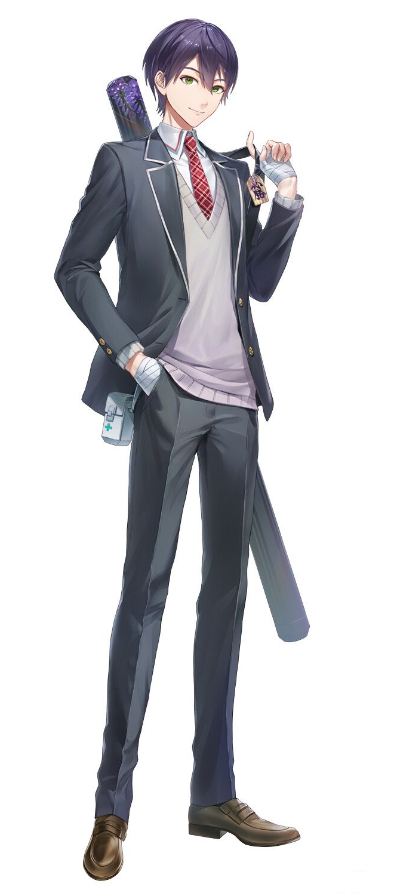

2018年に2期生としてデビュー。
VTuber黎明期にはまだ珍しかった男性VTuberだが、彼の存在や活躍によって後進への道が開かれたと言っても過言ではない。
配信中に見せる咄嗟の切り替えしや表現力・語彙力に定評があり、そのトークスキルはにじさんじの中でも指折り。
大人数でのコラボや大会をにじさんじで最初に行い、様々な公式番組や大会で司会進行やまとめ役・実況解説を務め、トーク力を遺憾なく発揮している。
匿名でメッセージが送れるサービス「マシュマロ」を開放しているが、彼のマシュマロには通称「クソマロ」と呼ばれる怪文書が常に送られており、 配信冒頭の雑談タイム等にツッコミを入れながら捌いていくのが常である。 このマシュマロもそうだが、長年リスナー(視聴者)との間で培われてきたコミュニケーションとしてプロレスのような掛け合いがあることが配信の特徴。 個人の活動だけでなく、「ROF-MAO」のメンバーとしても活動中。